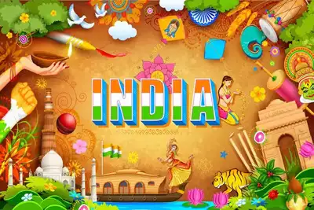

Best Festival Wishes
Indian Festivals in 2023: Here's the List of famous festivals of India

India is a country with diversities of religion, regions and language. India is known for celebrating a wide
range of festivals the entire year. This is the only country, where people celebrate each festival with great
grandeur no matter what your religion is or which community you belong.
There are many cultural festivals, which have different rituals, traditions and beliefs and many religious
festivals which hold great significance and these festivals are celebrated widely across the country with zeal
and enthusiasm.
India's top 10 festivals are celebrated with much pomp and fervor:
- Raksha Bandhan - (30th August 2023)
- Diwali — Festival of Lights (November 12th, 2023)
- Holi — Festival of Colors (March 24th, 2024)
- Navaratri — the 9-Nights Festival for Goddesses (October 15th to October 24th, 2023)
- Durga Puja — Victory of Durga (October 20th to 24th, 2023)
- Pongal — a Harvest Festival (January 15th, 2024)
- Makar Sankranti — the Kite Festival (January 14th, 2024)
- Eid-ul-Fitr — Marks the end of Ramadan (April 10th, 2024)
- Ganesh Chaturthi — Birthday of the Elephant-Headed God (September 19th, 2023)